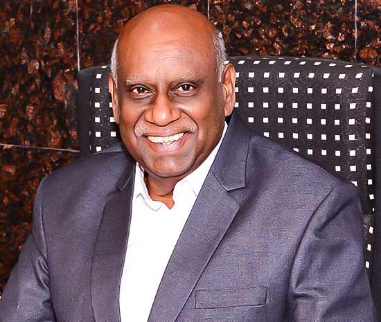

SUNDARAM ARULRHAJ HOSPITALS
SAH is a 100 bedded, multi-specialty, medical institution in Semi Urban Area, Tuticorin, TamilNadu, India.SAH is being expanded to 200 beds Medical Institution. www.sah-hospitals.com

SPECIALITIES
- Cardiology and Cardiothoracic Surgery.
- Diabetes and Management of its complications.
- Neurology and Neuro Surgery.
- Obstetrics, Gynecology and Pediatrics.
- RTA, Trauma and Medico legal Centre.
- Gastroenterology – Medical and Surgery.
- Nephrology and Urology
SAH HEALTH POLICY
-
WORLD CLASS HEALTH CARE REACHING TO COMMON MAN
THE BEST HEALTH CARE WITHIN YOUR REACH
-
CARE, COMMITMENT, CHARITY & QUALITY SERVICES
VISION
MISSION
VALUES

LABORATORY
- Bio Chemistry
- Micro Biology
- Pathology
RADIOLOGY & IMAGING
- Ultra Sonogram
- Color Doppler
- Endo sonogram
- Endoscopies
- Non invasive Cardiac lab
- CT scan
- MRI - attached
- EEG & ENMG
- PFT
- TMT
- Fully equipped Invasive Cardiovascular Laboratory.
My Future Mission.
- For my Hometown, Tuticorin: Aural Health University with Medical Facilities & Health Education services to the Semi Urban and Rural masses of south Tamilnadu.
- For my country, India: Health must be declared as fundamental right of Indians. Lobbying with Political & Professional leaders to enact "The Health Bill 2010 ", reaching Primary care and Emergency care Free to all citizen of India.
- Towards developing & under developed countries of Commonwealth: Healthy Commonwealth.
- Adopting Telehealth to “Reach the unreached”
My Mission.
- Infections free Commonwealth. Effective & Efficient Waste management system for Hospital Waste, Solid Waste, Hazardous Waste, etc – Healthy Environment.
- Control & Prevent Non Communicable Disease epidemic through Diet control, increased Physical activities & Control of Harmful use of alcohol & smoking.
- Primary Health Care for all. Primary care is the backbone of the Health of Nation. Strengthening & making it reachable to population in the rural & urban areas equally. Secondary & Tertiary care affordable to low and middle income citizen.
- Life saving drugs & newer introductions in Treatments must be available with quality & affordable cost to the Common man.
- Accident & Emergency Medical Services to the victims within the Golden Hour.